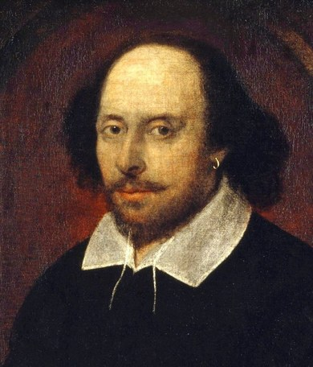

WILLIAM SHAKESPEARE
~ English Playwright

William Shakespeare was an English playwright, poet and actor. He is widely regarded as the greatest writer in the English language and the world's greatest dramatist. He is often called England's national poet and the "Bard of Avon".
About William Shakespeare
- William Shakespeare was born on April 23, 1564 in Stratford-upon-Avon. The son of John Shakespeare and Mary Arden, he was probably educated at the King Edward VI Grammar School in Stratford, where he learned Latin and a little Greek and read the Roman dramatists.
- At eighteen, he married Anne Hathaway, a woman seven or eight years his senior. Together, they raised two daughters: Susanna, who was born in 1583, and Judith (whose twin brother died in boyhood), born in 1585.
- Shakespeare was a prolific writer during the Elizabethan and Jacobean ages of British theatre (sometimes called the English Renaissance or the Early Modern Period). Shakespeare's plays are perhaps his most enduring legacy, but they are not all he wrote. Shakespeare's poems also remain popular to this day.
- Altogether Shakespeare's works include 38 plays, 2 narrative poems, 154 sonnets, and a variety of other poems. No original manuscripts of Shakespeare's plays are known to exist today. It is actually thanks to a group of actors from Shakespeare's company that we have about half of the plays at all. They collected them for publication after Shakespeare died, preserving the plays. These writings were brought together in what is known as the First Folio ('Folio' refers to the size of the paper used). It contained 36 of his plays, but none of his poetry.
- Shakespeare's legacy is as rich and diverse as his work; his plays have spawned countless adaptations across multiple genres and cultures. His plays have had an enduring presence on stage and film. His writings have been compiled in various iterations of The Complete Works of William Shakespeare, which include all of his plays, sonnets, and other poems. William Shakespeare continues to be one of the most important literary figures of the English language.
- For several years after Judith and Hamnet's arrival in 1585, nothing is known for certain of Shakespeare's activities: how he earned a living, when he moved from Stratford, or how he got his start in the theater.
Following this gap in the record, the first definite mention of Shakespeare is in 1592 as an established London actor and playwright, mocked by a contemporary as a "Shake-scene." The same writer alludes to one of Shakespeare's earliest history plays, Henry VI, Part 3, which must already have been performed. The next year, in 1593, Shakespeare published a long poem, Venus and Adonis. The first quarto editions of his early plays appeared in 1594. For more than two decades, Shakespeare had multiple roles in the London theater as an actor, playwright, and, in time, a business partner in a major acting company, the Lord Chamberlain's Men (renamed the King's Men in 1603). Over the years, he became steadily more famous in the London theater world; his name, which was not even listed on the first quartos of his plays, became a regular feature—clearly a selling point—on later title pages.
- Among the last plays that Shakespeare worked on was The Two Noble Kinsmen, which he wrote with a frequent collaborator, John Fletcher, most likely in 1613. He died on April 23, 1616—the traditional date of his birthday, though his precise birthdate is unknown. We also do not know the cause of his death. His brother-in-law had died a week earlier, which could imply infectious disease, but Shakespeare's health may have had a longer decline.
- The memorial bust of Shakespeare at Holy Trinity Church in Stratford is considered one of two authentic likenesses, because it was approved by people who knew him. (The bust in the Folger's Paster Reading Room, shown at left, is a copy of this statue.) The other such likeness is the engraving by Martin Droeshout in the 1623 First Folio edition of Shakespeare's plays, produced seven years after his death by his friends and colleagues from the King's Men.
- Besides almost retracting his earlier gibe about Shakespeare's lack of art, he gives testimony that Shakespeare's personality was to be felt, by those who knew him, in his poetry—that the style was the man. Jonson also reminded his readers of the strong impression the plays had made upon Queen Elizabeth I and King James I at court performances:
Sweet Swan of Avon, what a sight it were
To see thee in our waters yet appear,
And make those flights upon the banks of Thames
That so did take Eliza and our James!